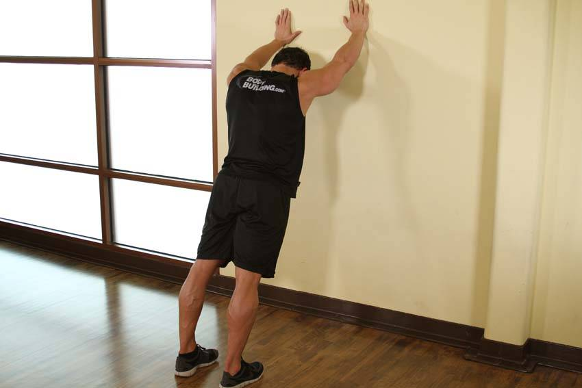

- Stand facing a wall from several feet away. Stagger your stance, placing one foot forward.
- Lean forward and rest your hands on the wall, keeping your heel, hip and head in a straight line.
- Attempt to keep your heel on the ground. Hold for 10-20 seconds and then switch sides.